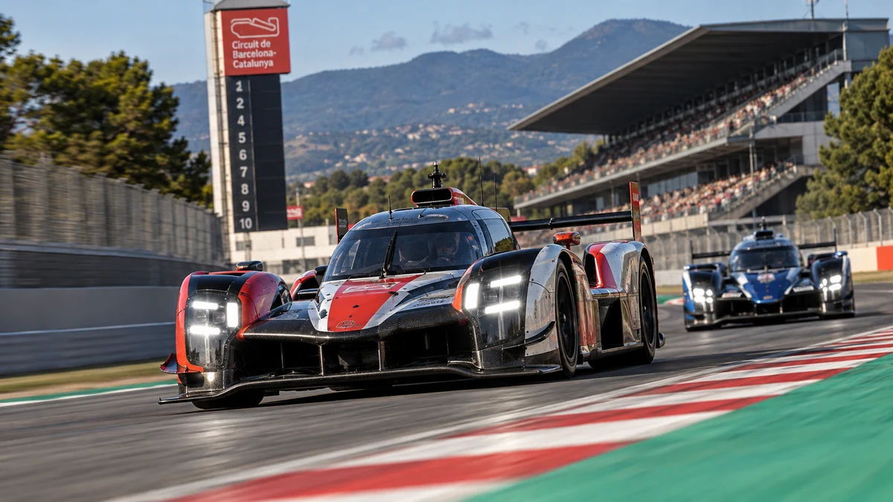
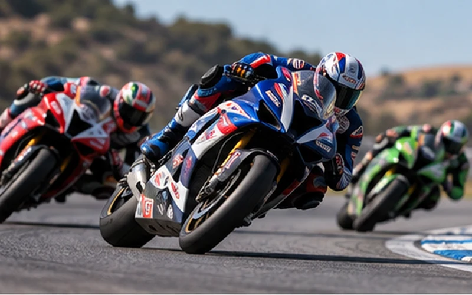
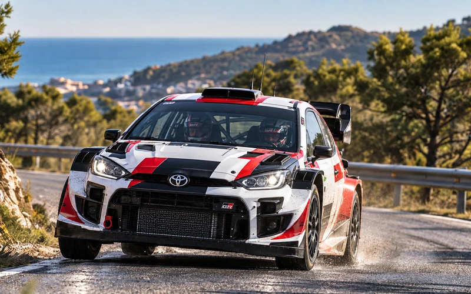
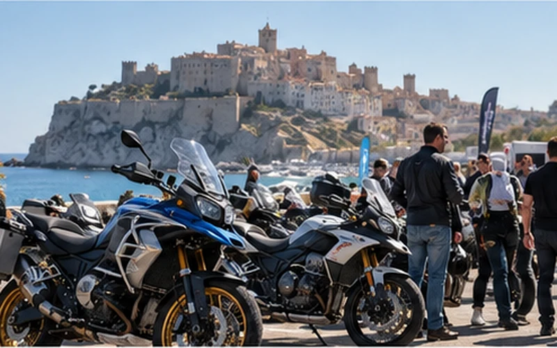
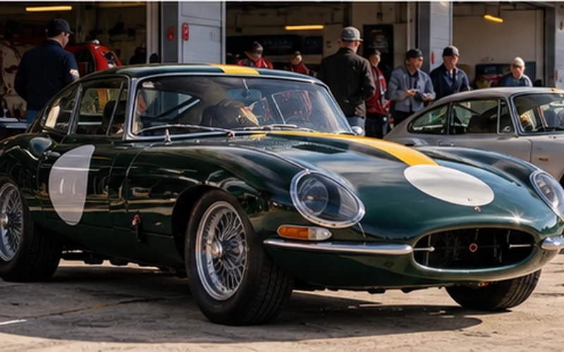
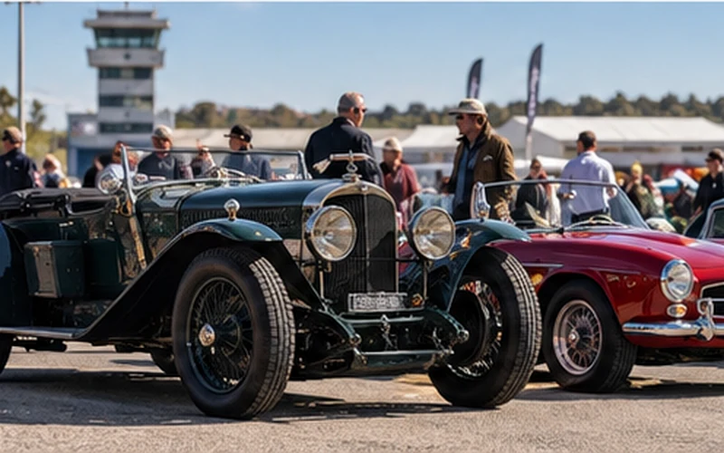

|
La selección de esta semana
Barcelona, Jerez y RallyRACC: fin de semana grande
Esta semana cuesta elegir por dónde empezar. El WEC se estrena en Barcelona, WorldSBK cierra la temporada en Jerez y el RallyRACC pone punto final al S-CER. Fuera de la competición, Peñíscola vuelve a reunir al mundo de la moto en los BMW Motorrad Days.
|
|

Evento destacado · Resistencia
FIA WEC · 6 Horas de Barcelona
16–18 octubre · Circuit de Barcelona-Catalunya, Montmeló
El Mundial de Resistencia llega a Barcelona con una cita completamente nueva en el calendario.
Las 6 Horas de Barcelona supondrán la primera carrera del FIA WEC en el Circuit de Barcelona-Catalunya y llevarán a Montmeló las categorías Hypercar y LMGT3 en la penúltima ronda de la temporada. El viernes arrancan los entrenamientos, el sábado llega la clasificación y el domingo, a las 12:00, comienza la carrera de seis horas.
Una oportunidad poco habitual para ver en España la referencia mundial de la resistencia y una de las parrillas más espectaculares del automovilismo actual.
Ver 6 Horas de Barcelona
|
Más planes para este fin de semana
|

|
Mundial · Moto
WorldSBK · Pirelli Spanish Round
16–18 octubre · Circuito de Jerez – Ángel Nieto
Jerez tiene este fin de semana la última palabra de la temporada WorldSBK.
El Pirelli Spanish Round cierra el campeonato 2026 con actividad de WorldSBK, WorldSSP, WorldWCR y WorldSPB. El viernes queda reservado para entrenamientos y Superpole, mientras sábado y domingo concentran las carreras que pondrán punto final al año.
Dos jornadas de competición y una última oportunidad esta temporada para ver el Mundial de Superbikes en directo.
Ver WorldSBK Jerez →
|
|
|

|
Rally · Nacional
61º RallyRACC Catalunya–Costa Daurada
16–17 octubre · Salou, Tarragona
La semana pasada lo dejamos en Reserva fecha. Ahora ya está aquí.
El RallyRACC cierra el S-CER 2026 con una edición íntegramente sobre asfalto y diez tramos cronometrados repartidos entre viernes y sábado. Salou vuelve a ejercer como centro de la prueba, con PortAventura World como parque de asistencia y el tramo urbano de Salou formando parte del recorrido del sábado.
El campeonato ya tiene campeón, pero las posiciones restantes del podio siguen abiertas antes de esta última cita.
Ver RallyRACC Catalunya →
|
|
|

|
Encuentro · Moto
BMW Motorrad Days · Peñíscola
16–18 octubre · Peñíscola, Castellón
El fin de semana no vive sólo de cronómetros y carreras.
Los BMW Motorrad Days regresan por tercer año consecutivo a Peñíscola con tres jornadas dedicadas a la moto. BMW ha preparado pruebas de modelos, actividades, GS Camp, zona expositiva, gastronomía y conciertos, en un encuentro que reunió a más de 10.000 asistentes en su edición de 2025.
Una alternativa completamente distinta para quien prefiera pasar el fin de semana entre motos, rutas y ambiente de comunidad.
Ver BMW Motorrad Days →
|
|
|

|
Reserva fecha
MotorLand Classic Festival 2026
24–25 octubre · MotorLand Aragón, Alcañiz
La semana siguiente cambiaremos de época en MotorLand.
El Classic Festival vuelve a reunir vehículos históricos en el circuito aragonés, combinando tandas en pista con exposición en el paddock y actividades alrededor del mundo del vehículo clásico.
Una de esas fechas que merece quedar marcada antes de que llegue el próximo fin de semana.
Ver MotorLand Classic Festival →
|
|
|
|
Lo próximo cerca de ti
|

|
XXVII Jornada de Puertas Abiertas · Fundación RACE
17 octubre · Circuito de Madrid Jarama – RACE
El Jarama abre sus puertas este sábado a una parte enorme de la historia del automóvil.
La Fundación RACE anuncia más de 850 vehículos clásicos e históricos y más de 40 clubes en una jornada que se desarrollará de 10:00 a 19:00. Entre ellos habrá cerca de 50 automóviles anteriores a 1930, además de diferentes grupos de clásicos recorriendo el circuito.
Un plan especialmente difícil de igualar para quien tenga el Jarama cerca este fin de semana.
Ver Jornada de Puertas Abiertas →
|
|
¿Todavía no tienes plan?
Consulta la agenda completa y encuentra eventos por fecha, disciplina o zona.
Ver todos los eventos
|
|
|